NCERT Solutions for Class 8 Science Chapter 16 Light
Topics and Sub Topics in Class 8 Science Chapter 16 Light:
| Section Name | Topic Name |
| 16 | Light |
| 16.1 | What makes Things Visible |
| 16.2 | Laws of Reflection |
| 16.3 | Regular and Diffused Reflection |
| 16.4 | Reflected Light Can be Reflected Again |
| 16.5 | Multiple Images |
| 16.6 | Sunlight — White or Coloured |
| 16.7 | What is inside Our Eyes? |
| 16.8 | Care of the Eyes |
| 16.9 | Visually Impaired Persons Can Read and Write |
| 16.10 | What is the Braille System? |
Light Class 8 Science NCERT Textbook Questions
Question 1.
Suppose you are in a dark room. Can you see objects in the room? Can you see objects out¬side the room? Explain.
Answer:
When we are in a dark room then we cannot see objects in the room. We can see the objects outside the room, because out of the room the light is available and the rays of light can enter our eyes after reflection from the objects.
Question 2.
Differentiate between regular and diffused reflection. Does diffused reflection mean the failure of the laws of reflection?
Answer:
| Regular Reflection | Diffused Reflection |
| (i) All the reflected rays are parallel. | (i) The reflected rays are not parallel. |
| (ii) It occurs on a smooth and polished surface. | (ii) It occurs on the rough surface. |
| (iii) Reflected rays are in one direction. | (iii) Reflected rays are scattered in different directions. |
No, diffuse reflection doesn’t mean the failure of laws of reflection.
Question 3.
Mention against each of the following whether regular or diffused reflection will take place when a beam of light strikes. Justify your answer in each case.
- Polished wooden table
- Chalk powder
- Cardboard surface
- Marble floor with water spread over it
- Mirror
- Piece of paper
Answer:
- Regular reflection will take place because the surface is plane and polished.
- Diffused reflection will take place because the surface is rough.
- Diffused reflection will take place because the surface is rough.
- Regular reflection will take place because the surface is smooth and plane.
- Regular reflection will take place because the surface is plane and polished.
- Diffused reflection will take place because the surface is rough.
Question 4.
State the laws of reflection.
Answer:
The laws of reflections are:
- The incident ray, the normal and the reflected ray, all lie in the same plane.
- The angle of incidence is equal to the angle of reflection.
Question 5.
Describe an activity to show that the incident ray, the reflected ray and the normal at the point of incidence lie in the same plane.
Answer:
Activity: To show that the incident ray, reflected ray and the normal at the point of incidence lie in the same plane.
Materials Required: Plane mirror, holder, ray box, etc.
Procedure: Fix sheet of white paper, a little beyond the edge of the board. Place a plane mirror strip vertically to the paper using a stand. Throw light from a ray box on the mirror. Look at the reflected ray. Mark the incident ray, normal ray and reflected ray. Fold the paper which is beyond the edge of the board. You will observe that the reflected ray is not seen in the folded portion of the chart paper. Now bring the folded portion back to its original position. The reflected ray of light is again seen on the page.
Conclusion: The sheet on the board can be considered as a plane. The incident ray, the reflected ray, the normal at the point of incidence lie in the same plane.

Incident ray, reflected ray and normal at the point of incidence lie in the same plane
Question 6.
Fill in the blanks in the following.
(a) A person 1 m in front of a plane mirror seems to be ______ m away from his image.
(b) If you touch your ______ ear with a right hand in front of a plane mirror it will be seen in the mirror that your right ear is touched with _____
(c) The size of the pupil becomes _______ when you see in dim light.
(d) Night birds have _______ cones than rods in their eyes.
Answer:
(a) 2
(b) left, left hand
(c) larger
(d) lesser
Choose the correct option in Questions 7-8.
Question 7.
The angle of incidence is equal to the angle of reflection
(a) Always
(b) Sometimes
(c) Under special conditions
(d) Never
Answer:
(a) Always
Question 8.
Image formed by a plane mirror is:
(a) virtual, behind the mirror and enlarged.
(b) virtual, behind the mirror and of the same size as the object.
(c) real at the surface of the mirror and enlarged.
(d) real, behind the mirror and of the same size as the object.
Answer:
(b) virtual, behind the mirror and of the same size as the object.
Question 9.
Describe the construction of a kaleidoscope.
Answer:
Kaleidoscope is a device based on the principle of multiple reflections. It consists of three long and narrow strips of plane mirrors inclined at an angle of 60° to one another forming prism. This is fitted in a tube. One end of this tube is closed by a cardboard disc having a hole at its centre. To the other end touching the mirrors plane glass plate is fixed on which broken pieces of coloured bangles are placed. This end of the tube is closed by a ground glass plate.
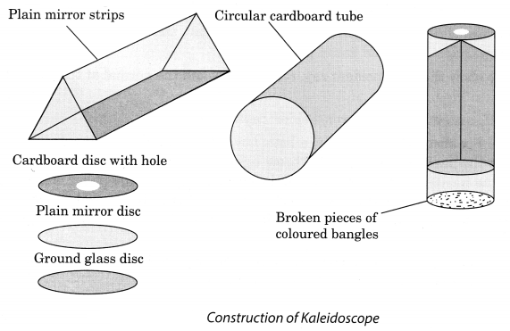
Question 10.
Draw a labelled sketch of the human eye.
Answer:
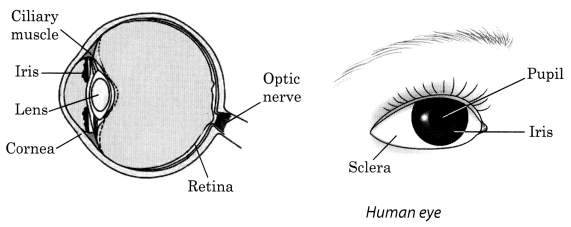
Question 11.
Gurmit wanted to perform Activity 16.8 using a laser torch. Her teacher advised her not to do so. Can you explain the basis of the teacher’s advise?
Answer:
Teacher has advised Gurmit not to do so because laser light is very harmful for her eyes and can cause a permanent defect in the eye. Person can even lose his or her eyesight if laser torch is directed over the eyes.
Question 12.
Explain how you can take care of your eyes.
Answer:
Eyes are very precious. We must take proper care of them. We must
- always sit straight while reading or writing.
- if advised, use suitable spectacles.
- wash our eyes with clean water frequently.
- not look at the sun directly.
- always read or write in a proper light.
Question 13.
What is the angle of incidence of a ray if the reflected ray is at an angle of 90° to the incident ray?
Answer:
Here, the angle of reflection is 90°. As we know, according to the laws of reflection that angle of incidence is equal to angle of reflection.
Here, the angle between the incident ray and reflected ray is 90°.
i.e., ∠i + ∠r = 90°
Since, ∠i = ∠r
We can write, ∠i + ∠i = 90°
⇒ 2∠i = 90°
⇒ ∠i = 45°
Angle of incidence = 45°.
Question 14.
How many images of a candle will be formed if it is placed between two parallel plane mir¬rors separated by 40 cm?
Answer:
Here, mirrors are placed parallel to each other 40 cm apart. Therefore, the infinite number of images will be formed.
Question 15.
Two mirrors meet at right angles. A ray of light is incident on one at an angle of 30° as shown in Fig. 16.19. Draw the reflected ray from the second mirror.
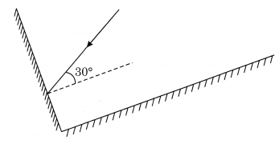
Answer:
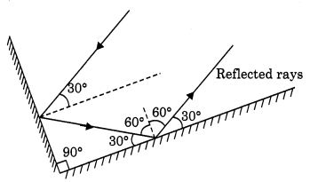
Question 16.
Boojho stands at A just on the side of a plane mirror as shown in Fig. 16.21. Can he see himself in the mirror? Also, can he see the image of objects situated at P, Q, and R?
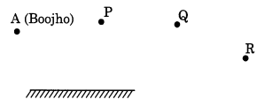
Answer:
No, Boojho can’t see himself in the mirror. He can see the image of the object at P and Q but not of R.
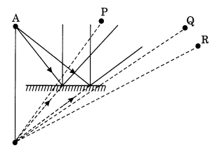
Question 17.
(a) Find out the position of the image of an object situated at A in the plane mirror (Fig. 16.23).
(b) Can Paheli at B see this image?
(c) Can Boojho at C see this image?
(d) When Paheli moves from B to C, where does the image of A move?
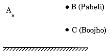
Answer:
(a) It is shown in the following figure.
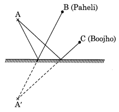
(b) Yes, Paheli can see the image of A.
(c) Yes, Boojho can see the image of A.
(d) Image of the object at A will not move as an object is not moving.
Light Class 8 Science NCERT Intext Activities Solved
Activity 1 (NCERT Textbook, Page 199)
Fix a white sheet of paper on a drawing board or a table. Take a comb and close all its openings except one in the middle. You can use a strip of black paper for this purpose. Hold the comb perpendicular to the sheet of paper. Throw light from a torch through the opening of the comb from one side (Fig. 16.5). With slight adjustment of the torch and the comb you will see a ray of light along the paper on the other side of the comb. Keep the comb and the torch steady. Place a strip of plane mirror in the path of the light ray (Fig. 16.5). What do you observe?
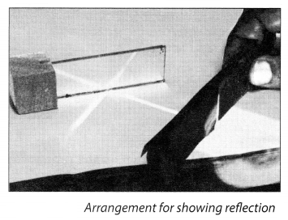
Solution:
It is observed that after striking the mirror, the ray of light is reflected in another direction.
Activity 2 (NCERT Textbook, Page 200)
Perform Activity 16.1 again. This time use a sheet of stiff paper or a chart paper. Let the sheet project a little beyond the edge of the Table (Fig. 16.6). Cut the projecting portion of the sheet in the middle. Look at the reflected ray. Make sure that the reflected ray extends to the projected portion of the paper. Bend that part of the projected portion on which the reflected ray falls. Can you still see the reflected ray? Bring the paperback to the original position. Can you see the reflected ray again? What do you infer?
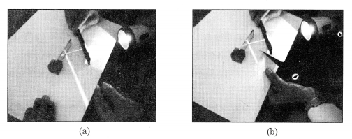
Incident ray, reflected ray and the normal at the point of incidence lie in the same plane
Solution:
Yes, the reflected ray of light is seen on the sheet. It is concluded that the entire sheet fixed on the drawing board represents a plane. The incident, reflected ray and the normal lie in the plane of paper.
Activity 3 (NCERT Textbook, Page201)
A source of light 0 is placed in front of a plane mirror PQ. Two rays OA and OC are incident on it (Fig. 16.7). Can you find out the direction of the reflected rays?
Draw normals to the surface of the mirror PQ, at the points A and C.Then draw the reflected rays at the points A and C. How would you draw these rays? Call the reflected rays AB and CD, respectively. Extend them further. Do they meet? Extend them backward. Do they meet now? If they meet, mark this point as I. For a viewer’s eye at E (Fig. 16.7), do the reflected rays appear to come from the point I. Since the reflected rays do not actually meet at I, but only appear to do so, we say that a virtual image of the point O is formed at I. As you have learnt already in Class VII, such an image cannot be obtained on a screen.
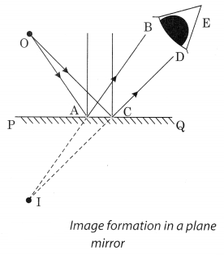
Solution:
Image formed by a plane mirror cannot be obtained on a screen. Thus, plane mirror forms virtual image.
Activity 4 (NCERT Textbook, Page202)
Imagine that parallel rays are incident on an irregular surface as shown in Fig. 16.8. Remember that the laws of reflection are valid at each point of the surface. Use these laws to construct reflected rays at various points. Are they parallel to one another? You will find that these rays are reflected in different directions. (Fig. 16.9)
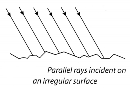
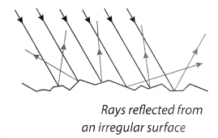
Solution:
It is observed that the reflected rays are not parallel to each other due to irregularities in the reflecting surface. This type of reflection is known as diffused or irregular reflection.
Activity 5 (NCERT Textbook, Page204)
Jake two plane mirrors. Set them at right angles to each other with their edges touching (Fig. 16.10).To hinge them you can use adhesive tape. Place a coin in between the mirrors. How many images of the coin do you see (Fig. 16.10)?
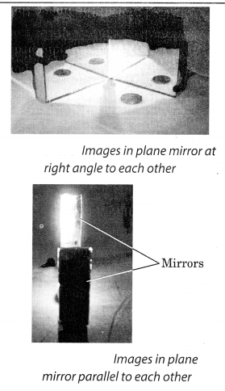
Now hinge the mirrors using the adhesive tape at different angles, say 45°, 60°, 120°, 180°, etc. Place some object (say a candle) in between them. Note down the number of images of the object in each case.
Finally, set the two mirrors parallel to each other. Find out how many images of a candle placed between them are formed (Fig. 16.11).
Solution:
(i) When two plane mirrors are joined at right angles, then three images are formed.
(ii) When two plane mirrors are joined at 45°, 7 images are formed.
(iii) When two plane mirrors are joined at 60°, 5 images are formed.
(iv) When two plane mirrors are joined at 120°, 2 images are formed.
(v) When two plane mirrors are joined at 180°, 1 image is formed.
(vi) When the plane mirrors are parallel to each other, infinite images are formed.
Activity 6 (NCERT Textbook, Page 206)
To make a kaleidoscope, get three rectangular mirror strips each about 15 cm long and 4 cm wide. Join them together to form a prism as shown in Fig. 16.12(a). Fix them in a circular cardboard tube or tube of a thick chart paper. Make sure that the tube is slightly longer than the mirror strips. Close one end of the tube by a cardboard disc having a hole in the centre, through which you can see [Fig. 16.12(b)]. To make the disc durable, paste a piece of transparent plastic sheet under the cardboard disc. At the other end, touching the mirrors, fix a circular plane glass plate [Fig. 16.12(c)]. Place on this glass plate several small pieces of coloured glass (broken pieces of coloured bangles). Close this end of the tube by a ground glass plate. Allow enough space for the colour pieces to move around.
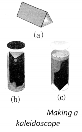
Solution:
Variety of patterns are observed in the tube. Kaleidoscope operates on the principle of the multiple reflection.
Activity 7 (NCERT Textbook, Page 205)
Get a plane mirror of a suitable size. Place it in a bowl (katori) as shown in Fig. 16.13, Fill the bowl with water. Put this arrangement near a window in such a way that direct sunlight falls on the mirror. Adjust the position of the bowl so that the reflected light from the mirror falls on a wall. If the wall is not white, fix a sheet of white paper on it. Reflected light will be seen to have many colours. How can you explain this?

Solution:
The mirror and water form a prism and breaks up the light into its colours. Splitting of light into its colours is known as dispersion of light. Rainbow is a natural phenomenon showing dispersion.
Activity 8 (NCERT Textbook, page 206)
Look into your friend’s eye. Observe the size of the pupil.Throw light on her
eye with a torch. Observe the pupil now. Switch off the torch, and observe her pupil once again. Do you notice any change in the size of the pupil? In which case was the pupil larger? Why do you think it was so?
In which case do you need to allow more light in the eye, when the light is dim or bright?
Solution:
When the light from the torch falls on the pupil, its size becomes smaller to allow less amount of light to enter into the retina. When light is switched off, pupil enlarges to allow more light to enter into the retina. Thus, pupil controls the amount of light entering into the eye.
Activity 9 (NCERT Textbook, Page206)
Make a round mark and a cross on a sheet of paper with the spot to the right of the cross [Fig. 16.14],
The distance between two marks maybe 6-8 cm. Hold the sheet of paper at an arm’s length from the eye. Close your left eye. Look continuously at the cross. Move the sheet slowly towards you, keeping your eye on the cross. What do you find? Does the round mark disappear at some point? Now close your right eye. Look at the round mark now and repeat the activity. Does the cross disappear?
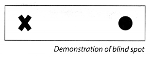
Solution:
Yes, the cross disappears. The disappearance of the cross or the round mark shows that there is a point on the retina which cannot send messages to the brain when light falls on it.
Activity 10 (NCERT Textbook, Page 207)
Get a square piece of cardboard of size 6-8 cm. Make two holes as shown in Fig. 16.15.Thread a string through the two holes. Draw/paste a cage on one side of the cardboard and a bird on the other side. Twist the string and make the card twirl rapidly. Do you seethe bird in the cage?

Solution:
Yes, we can seethe bird in the cage.Thus, impression of an image persist in retina for about 1/16th of a second.
NCERT Solutions for Class 8 Science Chapter 16 – 1 Mark Questions and Answers
Question 1.
Define dispersion of light. [MSE (Chandigarh) 2007]
Answer:
Splitting up of white light into seven colours when it passes through a glass prism is known as dispersion of light.
Question 2.
Name the colours in the order they appear in the spectrum of light. [MSE (Chandigarh) 2005]
Answer:
VIBGYOR – Violet, Indigo, Blue, Green, Yellow, Orange and Red.
Question 3.
Angle of incidence is equal to the angle of reflection. [NCERT]
- Always
- Sometimes
- Under special conditions
- Never
Answer:
Always.
Question 4.
Image formed by a plane mirror is [NCERT]
- virtual, behind the mirror and enlarged.
- virtual, behind the mirror and of the same size as the object.
- real at the surface of the mirror and enlarged.
- real, behind the mirror and of the same size as the object.
Answer:
virtual, behind the mirror and of the same size as the object.
Question 5.
What is the angle of incidence of a ray if the reflected ray is at an angle of 90° to the incident ray ? [NCERT]
Answer:
The angle of incidence = 45°.
Question 6.
What are the two factors responsible for an object to be seen ?
Answer:
To be seen an object, the sense of vision and light are required.
Question 7.
What is meant by normal ?
Answer:
The perpendicular drawn at the point of incidence is known as normal.
Question 8.
Define the angle of incidence.
Answer:
The angle between the incident ray and the normal is known as angle of incidence.
Question 9.
What name is given to the angle between the normal and the reflected ray ?
Answer:
Angle of reflection.
Question 10.
What is meant by lateral inversion ? [NCT2010]
Answer:
Lateral inversion is the phenomenon of the interchange of the left and right sides, between the object and its image.
Question 11.
When the reflected rays are parallel, what type of reflection is taking place ?
Answer:
Regular reflection.
Question 12.
In irregular reflection, are the reflected rays parallel or not ?
Answer:
In irregular reflection the reflected rays are not parallel.
Question 13.
What are illuminated objects ?
Answer:
Objects which reflect the light falling on them and can be seen are known as illuminated objects
Question 14.
What is white light ?
Answer:
Sunlight is a mixture of seven colours also known as white light.
Question 15.
Give one example of natural dispersion.
Answer:
Formation of rainbow.
Question 16.
What is function of iris ?
Answer:
Iris controls the amount of light entering into the eyes.
Question 17.
What is meant by visually challenged people ?
Answer:
Visually challenged people have limited vision to see things.
Question 18.
What are non-optical aids ?
Answer:
Non-optical aids include visual aids, tactual aids, auditory aids and electronic aids
Question 19.
What are tactual aids ?
Answer:
Tactual aids include Braille writer, slate and stylus. They help the visually challenged persons in taking notes, reading and writing and in learning mathematics.
Question 20.
Fill in the blanks :
- The angle of reflection is ………… to the angle of incidence.
- The image formed by a plane mirror is ………….. inverted with respect to the object.
- The …………….. uses two plane mirror strips each of which is kept inclined at 45° to the axis of the tube.
Answer:
- equal
- laterally
- periscope.
Question 21.
Write one/two-word answer for each of the following :
- The ray of light that bounces back from a plane mirror.
- The nature of the image formed by a plane mirror.
- The number of images formed by a pair of parallel plane mirrors.
- A devices that is often used as “looking glass”.
Answer:
- Reflected ray
- Virtual image
- Multiple images
- Mirror.
NCERT Solutions for Class 8 Science Chapter 16 – 2 Mark Questions and Answers
Question 1.
Which kind of spherical mirrors are used in vehicles ? Why ? [NCT 2007]
Answer:
A convex mirror is used in vehicles because it gives the driver a large field of view.
Question 2.
Why is it important to take care of our eyes ? Mention any two activities that may cause damage to our eyes. [KVS 2005]
Answer:
Eyes are the most wonderful gift of nature to us and they must serve us for whole life. Our eyes can be damaged by playing carelessly or by hurting them with sharp projections
Question 3.
Suppose you are in a dark room. Can you see object in the room ? Can you see objects outside the room ? Explain. [NCERT]
Answer:
The objects cannot be seen inside the room because there is no light. The objects outside the room can only be seen if there is light outide.
Question 4.
State the laws of reflection. [NCT 2011, NCERT]
Answer:
Laws of reflection:
- The incident ray, the reflected ray and the normal at the point of incidence lie in the same plane.
- The angle of incidence is equal to the angle of reflection
Question 5.
Distinguish between real and virtual image.
Answer:
Differences:
| Real image | Virtual image |
| (a) The rays actually meet at a point. (b) The image can be obtained on a screen. |
(a) The rays donot meet at a point. (b) The image cannot bje obtained on a screen. |
Question 6.
What is the function of the eyelids ?
Answer:
- Eyelids prevents the objects from entering the eye.
- They also shut out light when not required.
Question 7.
Give some uses of plane mirror.
Answer:
Plane mirrors are used for dressing up, shaving beards, in scientific metres and for designing periscope.
Question 8.
How many plane mirror strips do we use in a kaleidoscope. At what angle are they inclined with respect to each other ?
Answer:
The kaleidoscope uses a set of three equal size plane mirror strips. The three strips are inclined to each other at angles of 60° each.
Question 9.
Why do we say that the image formed in a plane mirror is “virtual” ?
Answer:
The image formed in a plane mirror cannot be obtained on a screen. So we, say it is a ‘virtual’ image.
Question 10.
What would you do to see if the barber has cut your hair properly at the back ?
Answer:
I would keep another mirror parallel to the main mirror in a vertical position.

Question 11.
How many images are formed when two mirrors are placed edge to edge
- at right angles of each other.
- at an angle of 60° to each other ?
Answer:
- Three images will be formed.
- Five images will be formed.
Question 12.
- How are multiple iiriages formed ?
- Name a device based on this principle ?
Answer:
- When three rectangular strips of plane mirror are kept edge to edge at an angle of 60° to each other, multiple images are formed.
- Kaleidoscope is based on this principle.
Question 13.
What is colour blindness ? Give reason for this defect ?
Answer:
Some people cannot distinguish between the different colours. This is known as colour blindness. Colour blindness is due to the absence of cones on the nerve endings on the retina.
Question 14.
What is a nictating membrane ? In which animal is it found ?
Answer:
Nictating membrane is a transparent membrane over the eye to protect the eye from water. Fish and frogs have a nictating membrane.
Question 15.
What kind of eyes do the insects have ?
Answer:
Eye in insects is a compound eye with hundreds of small units, each with a lens of its own. The image seen by a insect is a blured picture.
Question 16.
Why should children take milk and eat carrots ?
Answer:
Milk, carrots and yellow fruits are rich in vitamin A, which is very essential for the eyes to maintain good vision.
Question 17.
How is night blindness caused ?
Answer:
Night blindness is caused by the deficiency of vitamin A and damage to the retina and the rods.
Question 18.
Distinguish between luminous and non-luminous bodies.
Answer:
Please refer to important points and definitions 21 and 22.
Question 19.
Is the moon a luminous body ? How are we able to see the moon ?
Answer:
The moon is non-luminous. We are able to see the moon because it reflects the sunlight falling on it.
NCERT Solutions for Class 8 Science Chapter 16 – 3 Mark Questions and Answers
Question 1.
Two mirrors meet at right angles. A ray of light is incident on one at an angle of 30° as shown in the figure. Draw the reflected ray from the second mirror. [NCERT]
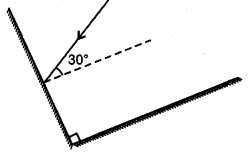
Answer:
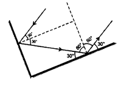
Question 2.
What are cones and rods ? What are their functions ?
Answer:
Cones are the nerve endings which are sensitive to colour light. They help us to distinguish between colours.
Rods are the nerve endings which are sensitive to bright light.
Question 3.
- In a periscope two mirrors are arranged parallel to each other but they do not form multiple images. Why ?
- What is the use of periscope ?
Answer:
- In a periscope two mirrors are placed parallel and facing each other but are in an inclined position at an angle of 45°. So they do not form multiple images.
- Uses of periscope
- in submarines to view the happening on the surface of water.
- to view objects behind the wall.
Question 4.
Draw a diagram to show dispersion of light.
Answer:
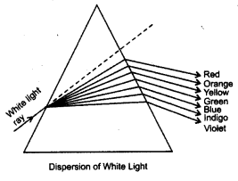
Question 5.
- What is spectrum ?
- What is the meaning of VIBGYOR ?
Answer:
- Spectrum is the band of seven colours obtained on the screen when white light splits on passing through a prism.
- VIBGYOR represents the seven colours of the spectrum, i.e. violet, indigo, blue, green, yellow, orange and red.
Question 6.
How is a rainbow formed ?
Answer:
The water droplets suspended in the air after the rain act as prisms. When the sun is towards the horizon the inclined rays pass through the water drops to disperse into the seven colours of the specturm.
Question 7.
Why does white light disperse when it passes through a glass prism ?
Answer:
White light is a combination of seven colours of light. The speed of each colour is different. So, while passing through the glass prism each colour deviates by different amounts. Therefore, despersion of light into a spectrum takes place.
Question 8.
- Which part of the human eye makes a person ‘blue eyed’ ?
- What role is played by ciliary muscles ?
- What is the importance of retina in the eye ?
Answer:
- Iris is responsible for making the person blue eyed.
- Ciliary muslces help to adjust the focal length of the lens to view all objects clearly.
- The image of the object is formed on the retina of the eye.
Question 9.
What is the difference between the eyes of the night birds and day birds ?
Answer:
The day birds can see clearly during the day but not at night. The day birds have more cones and less rods. The cones are sensitive to bright light and can sense colours. Night birds can see clearly at night but not cjuring the day. Their eyes have a large cornea and pupil to allow more lighted pass. Also their retina has mostly rods and few cones. Rods are more sensitive to dim light. –
Question 10.
What is cataract of the eye ?
Answer:
Cataract is a condition in which the lens becomes milky. Light does not pass through such a lens to reach the retina. It can be corrected by replacing the lens with a synthetic lens.
Question 11.
What are the causes of blindness ?
Answer:
Blindness may be caused due to damage to :
- the lens
- the cornea
- the complete eye
Question 12.
How do visually impaired people communicate ?
Answer:
Visually impaired people can communicate by following methods :
- By using the Braille system which employs groups of dots to represent printed letters and numbers.
- in 1980, Braille computer software was developed. It can input, output and translate documents to and from Braille.
- by speech technology that can convert ordinary text into speech.
Question 13.
How is Braille system used ?
Answer:
Every character in the Braille code is based on the arrangement of one to six raised dots. Each dot has a numbered position in the Braille cell. These characters make up the letters of the alphabet, punctuation marks, numbers and everything else that can be printed does not have a separate alphabet of capital letters as there is in a print.
Question 14.
Explain how a screen reader can help visually impaired people ?
Answer:
A screen reader is a software programme that provides access to computer software applications and the internet by using a speech synthesizer to read the information on the monitor loudly.
Question 15.
- For how long does the image remain on the retina ?
- How are we able to see a moving picture ?
Answer:
- The imperssion of an image is retained on the retina for about l/16th of a second.
- If still images are projected on the retina at the rate more than 16 pictures per second, – then the eye will see the pictures moving.
Question 16.
Draw a ray diagram to show incident ray, reflected ray, normal, angle of incidence,, angle of reflection; if the angle of incidence is 45°
Answer:
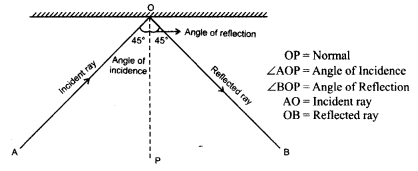
NCERT Solutions for Class 8 Science Chapter 16 – 5 Mark Questions and Answers
Question 1.
How can you compare human eye with a photographic camera ? [MSE (Chandigarh) 2008]
Answer:
| Human Eye | Photographic Camera |
| (a) Real, inverted image is formed on retina. (b) The image cannot be stored as a photograph. (c) The focal length of convex lens can be adjusted by ciliary muscles. (d) Eyes uses line cell to detect light. |
(a) Real, inverted image is formed on a film. (b) The image can be stored as a photograph. (c) The focal length of the lens cannot be adjusted. (d) Camera uses diaphragm to detect light and capture image. |
Question 2.
Draw a labelled sketch of human eye. [NCT2011]
Answer:

Question 3.
Differentiate between regular and diffused reflection. Does diffused reflection mean the failure of the laws of reflection ? [NCERT]
Answer:
When the reflected rays are parallel to each other, it is known as regular reflection. When the reflected rays are not parallel, the reflection is known as diffused or irregular reflection. Diffused reflection is not due to the failure of the laws of reflection. It is caused by irregularities in the reflecting surface.
Question 4.
Mention against each of the following whether regular or diffused reflection will take place when a beam of light strikes. Justify your answer in each case. [NCERT]
- Polished wooden table
- Chalk powder
- Cardboard surface
- Marble floor with water spread over it
- Mirror
- Piece of paper
Answer:
- polished wooden table
- chalk powder
- cardboard surface and
- marble floor with water spread over it and
- mirror will show regular reflection. This happens because the surface is plane without any defects.
- piece of paper show irregular reflection because the reflecting surface is not smooth. There are irregularities in the reflecting surface.
Question 5.
Fill in the blanks in the following : [NCERT]
- A person 1 m inffont of a plane mirror seems to be ………… m away from his image.
- If you touch your …………. ear with right hand in front of a plane mirror it will be seen in the mirror that your right ear is touched with .
- The size of the pupil becomes ………….. when you see in dim light.
- Night birds have ………….. cones than rods in their eyes.
Answer:
- 2 m
- left, left hand
- bigger
- few
Question 6.
Describe the construction of a kaleidoscope. [NCERT]
Answer:
To make a kaleidoscope, get three rectangular strips of glass 15 cm long and 4 cm wide each. Join them together to form a prism. Fix them with a few thick chart papers in a slightly long circular tube. Close one end of the tube by a cardboard disc having a hole in centre. At the other end touching the mirrors fix a circular plane glass sheet. Invert the tube and place some broken small pieces of coloured bangles on the glass plate. Close this end of the tube by a ground glass plate.
Question 7.
Explain how you can take care of your eyes. [NCERT]
Answer:
We can take care of our eyes in the following ways-
- have a regular check up.
- if advised, use suitable spectacles.
- avoid too much or too little light,
- wash your eyes frequently with clean water.
- always read at the normal distance for vision.
Question 8.
Give four properties of the image of an object formed by a plane mirror.
Answer:
The properties of the image formed by a plane mirror
- The image is formed as far behind the mirror as the object is in front of it.
- The image formed is a virtual image.
- The image formed is an erect image and of same size of the object.
- The image formed is laterally inverted with respect to the object.
Question 9.
Boojho stands at A just on the side of a plane mirror as shown in figure. Can he see himself in the mirror ? Also can he see the image of objects situated at P, Q and R ? [NCERT]
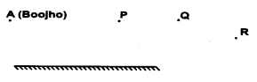
Answer:
Yes, Boojho can see his image. Yes, he can see the objects situated at P, Q and R.
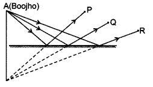
Question 10.
- Find out the position of the image of an object situated at A in the plane mirror (figure). [NCERT]
- Can Paheli at B see this image ?
- Can Boojho at C see this image ?
- When Paheli moves from B to C, where does the image of A move ?
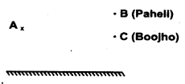
Answer:
- 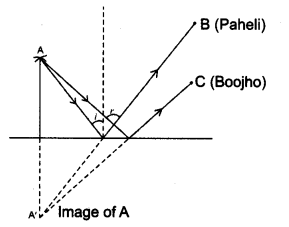
- Yes Paheli can see the image of A.
- Yes, Boojho can see this image.
- When Paheli moves from B to C, the image of A will move from B to C.
Question 11.
- What is myopia ?
- How is it caused ?
- How can it be corrected ?
- Draw diagrams to show myopic eye and its correction.
Answer:
-
- When a person can see nearby object clearly, but not far away objects, he is suffering from myopia.
- It is caused by the flattening of the eyeball and the lens becomes thick and rigid.
- It can be corrected by using spectacles with concave lenses.
-
- 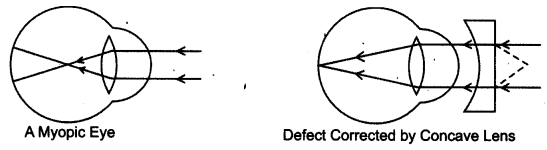
Question 12.
- What is hypermetropia ?
- How is it caused ?
- How can it be corrected ?
- Draw diagram to show defective eye and its correction.
Answer:
- A person suffering from hypermetropia can clearly see distant objects but finds difficulty in reading, writing and viewing different objects.
- It is caused by the elongation of the eyeball and the lens becomes flat.
- It can be corrected by using a convex lens.
- 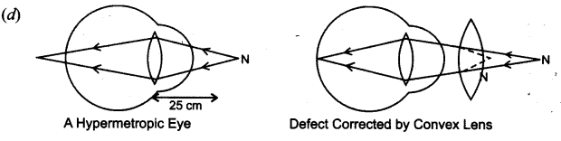
NCERT Solutions for Class 8 Science Chapter 16 MCQs
Question 1.
Which of the following material cannot be used to make a lens ? [NCERT]
(a) Plastics
(b) Water
(c) Clay
(d) Glass
Answer:
(c)
Question 2.
Which of the following would you prefer, to read very small letters printed on the pages of a dictionary ? [NCERT]
(a) A convex lens of focal length 100 cm
(b) A concave lens of focal length 10 cm
(c) A concave lens of focal length 5 cm
(d) A convex lens of focal length 5 cm
Answer:
(d)
Question 3.
A pond of water appears shallow because of
(a) reflection
(b) refraction
(c) dispersion
(d) none of these
Answer:
(b)
Question 4.
The phenomenon of the splitting of white light into seven colours is called as
(a) dispersion
(b) refraction
(c) reflection
(d) deviation
Answer:
(a)
Question 5.
In air all colours propagate
(a) with different speed
(b) nearly same speed
(c) with minimum speed of red colour
(d) with maximum speed of violet colour
Answer:
(b)
Question 6.
The phenomenon of dispersion is not visible in a
(a) prism
(b) glass slab
(c) mirror
(d) none of these
Answer:
(b)
Question 7.
If the refractive index is more then optical density is
(a) more
(b) less
(c) equal
(d) independent of refractive index
Answer:
(a)
Question 8.
On refraction through a parallel faced glass slab the emergent ray is
(a) parallel to incident ray
(b) displaced w.r.t. incident ray
(c) is not displaced w.r.t. incident ray
(d) both (a) and (b)
Answer:
(d)
Question 9.
When a ray of light propagating (in a straight line) in one transparent medium to enter another transparent medium
(a) it gains speed
(b) it losses speed
(c) it neither gains nor losses speed
(d) its speed in second medium depends upon relative refractive index for a given pair
Answer:
(d)
Question 10.
If lower half of a convex lens is painted black then
(a) no image is formed
(b) only erect image is formed
(c) only diminished image is formed
(d) image is formed but is of reduced intensity.
Answer:
(d)
Question 11.
The change in focal length of an eye lens, to focus the image of objects at varying distances, is done by the action of
(a) pupil
(b) iris
(c) retina
(d) ciliary muscles
Answer:
(d)
Question 12.
The human eye can focus objects at different distances by adjusting the focal length of the eye lens. This ability of the eye is known as
(a) persistence of vision
(b) far-sightedness
(c) near-sightedness
(d) power of accomodation
Answer:
(d)
Question 13.
The least distance of distinct vision ‘for a young adult with normal vision is (nearly)
(a) 25 m
(b) 25 cm
(c) 2.5 cm
(d) 2.5 m
Answer:
(b)
Question 14.
The Braille system, for visually challenged persons,, is a
(a) visual aid
(b) auditory aid
(c) tactual aid The eye lens is
(d) electronic aid
Answer:
(c)
Question 15.
The eye lens is
(a) concave
(b) convex
(c) planoconcave
(d) planoconvex
Answer:
(b)
Question 16.
Eye problems happen due to lack of
(a) Vitamin C
(b) Vitamin D
(c) Vitamin A
(d) Vitamin B complex
Answer:
(c)
Question 17.
The blind spot of the eye is
(a) at the junction of optic nerve and retina
(b) on one side of optic nerve
(c) on one side of retina
(d) in the centre of retina
Answer:
(a)
Question 18.
The light sensitive cells having shape of cones
(a) respond mainly to colours of incident light
(b) respond mainly to amount of incident light
(c) respond to both colour and amount of light
(d) enables us to see in dark
Answer:
(a)
More CBSE Class 8 Study Material
- NCERT Solutions for Class 8 Maths
- NCERT Solutions for Class 8 Science
- NCERT Solutions for Class 8 Social Science
- NCERT Solutions for Class 8 English
- NCERT Solutions for Class 8 English Honeydew
- NCERT Solutions for Class 8 English It So Happened
- NCERT Solutions for Class 8 Hindi
- NCERT Solutions for Class 8 Sanskrit
- NCERT Solutions